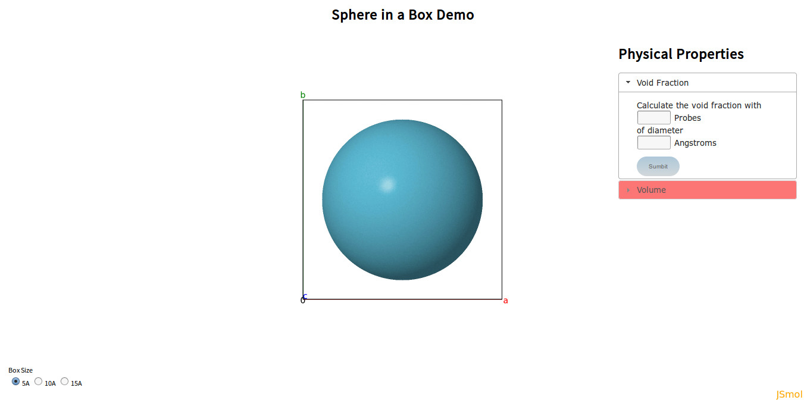
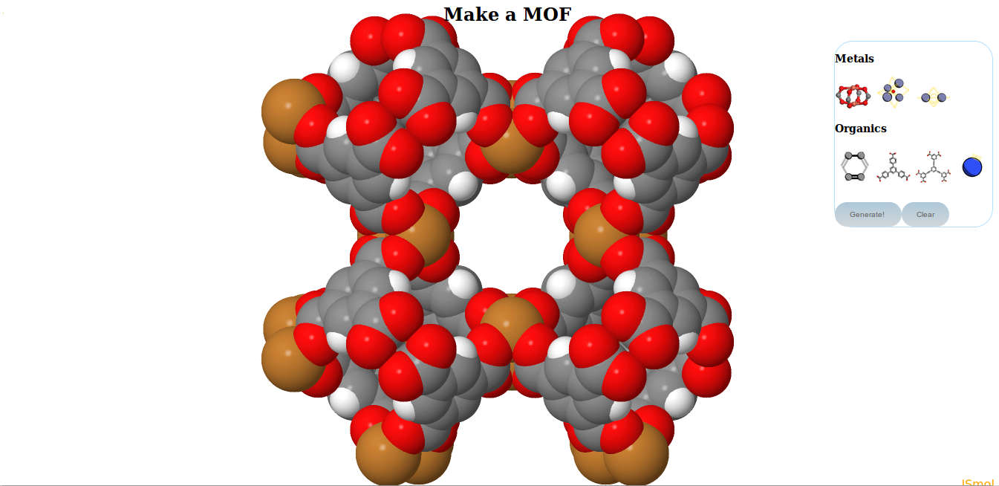

Metal Organic Frameworks or MOFs are compounds consisting of metal nodes and organic linkers. MOFs have applicaions in many areas such as gas adsorption for storage or separations by size. This site is intended as a learning and research tool for MOFs. Here you may explore the physical properties of MOFs in MOF Explorer, learn about Monte Carlo simulations in the Demo module, or combine building blocks to make your own MOF in MOF Maker.
MOF Explorer
"Sphere in a box" demo
MOF Maker
How does it work?
Molecular visualization
All of the structures are represented using JSMol, a free javascript molecular visualizer. Each atom in a strucutre has a unique position given by (x,y,z) coordinates, and a diameter given by a value measured in Angstroms (Å). Each atom is assumed to be a sphere with a defined center and diameter. This simplification drives the visualization and simplifies calculation. Colors are used to show different atom types, the most common being grey for Carbon, white for Hydrogen, red for Oxygen, blue for Nitrogen. MOFs are often crystalline or lattice structures consisting of many repeating units. The smallest such unit is the unit cell and is the default view when a structure is loaded. A supercell arises when a unit cell is repeated several times. To visualize a supercell, imagine that the structure continuues from any boundary back around to that accross from it. Or open MOF Explorer and set the supercell parameters.
Periodic Boundary Conditions
When performing calculations it is often important to know the distance between two structure atoms. Due to periodic boundary
conditions (PBC), the nearest atom to a point might not be in the same unit cell. To account for this all distances are computed twice, as a straight line between points and then taking
PBC into consideration. The former yields a distance vector between two points, the latter applies PBC to the vector by considering the image of a point, its analog in the neighboring cell.
An important distinction can be made between unit cells that are orthorhombic (all angles are right angles) or not.
For those that are, PBC calculations take two steps. First, each component of the distance vector is compared to the unit cell length.
If point A is less than half a unit cell from point B, then the image of A in the neighboring cell (A') must be further away. No calculations are made, the original value is the smallest distance.
Conversely, if A is more than half the unit cell from B, then A' is closer than A. The distance of A to B becomes the distance from A' to B by shifting the position of A to A'.
If the cell is not orthorhombic, some of the implicit simplifications above no longer hold. Instead, matrix transformations are used to compute the distance to the image. There is a matrix
that defines any unit cell and can be found with:
// A, B, C are vector lengths
// (b) is in the xz-plane and (c) has a positive y component.
// further, alpha is the angle (bc), beta is (ac), gamma is (ab)
a_x = A;
a_y = 0.0;
a_z = 0.0;
b_x = B * Math.cos(gamma);
b_y = B * Math.sin(gamma);
b_z = 0.0;
c_x = C * Math.cos(beta);
c_y = (B * C * Math.cos(alpha) - b_x * c_x) / b_y;
c_z = Math.sqrt(Math.pow(C,2) - Math.pow(c_x,2) - Math.pow(c_y,2));
cellMatrix = [a_x, a_y, a_z, b_x, b_y, b_z, c_x, c_y, c_z];
The inverse of the cell matrix allows for the transformation of the cell to a non-slanted, or orthogonal basis. The same calculations as for an orthorhombic cell are then performed, subtracting
a vector length from the position if the distance is more than half of the vector (here unit cell and vector are not interchangeable). The distance vector is then transformed back to the
original basis by multiplication of the cell matrix. The result is a modified distance vector that takes into account PBC:
function pbCond(dist) {
if (notOrthorhombic) {
fractional = [0,0,0];
fractional = matrixDotVector(inverseMatrix, dist);
xVect = [0,0,0];
xVect[0] = fractional[0] - Math.round(fractional[0]);
xVect[1] = fractional[1] - Math.round(fractional[1]);
xVect[2] = fractional[2] - Math.round(fractional[2]);
cartesian = matrixDotVector(cellMatrix, xVect);
return cartesian;
}
else {
if (dist[0] > cellSize[0]/2) {
dist[0] = dist[0] - cellSize[0];
}
if (dist[1] > cellSize[1]/2) {
dist[1] = dist[1] - cellSize[1];
}
if (dist[2] > cellSize[2]/2) {
dist[2] = dist[2] - cellSize[2];
}
return dist;
}
}
Void Fraction
The void fraction of a structure is a measure of the volume it occupies within a unit cell. A hollower or emptier cell corresponds to a greater void fraction. Calculating the void
fraction is akin to throwing a large number of darts at the structure and seeing how many hit. Instead of darts the simulation uses spherical probes of a given size (point probes have size 0).
These probes are inserted randomly into the unit cell and those that overlap with the structure are removed. This is done comparing the distance from the probe to each of the structure atoms
with the sum of their radii. If the sum of the radii is larger than the distance then the two overlap and the probe is flagged for deletion.
The ratio of those that remain to the total used is the void fraction.
for (i=0;i<numProbes;i++) { // for all of the probes
x1 = probeLocation[i][0];
y1 = probeLocation[i][1];
z1 = probeLocation[i][2];
var dr = 0;
for (k=0;k<numStructureAtoms;k++) { // compare to coordinates of structure
if (!isInArray(i,flagged)) {
x2 = atomLocation[k]['x'];
y2 = atomLocation[k]['y'];
z2 = atomLocation[k]['z'];
radius = atomDiameters[atoms[k]['sym']]/2;
dist = distance(x1,y1,z1,x2,y2,z2);
dist = pbCond(dist);
dr = Math.sqrt(Math.pow(dist[0],2) + Math.pow(dist[1],2) + Math.pow(dist[2],2));
if (dr > (probeRadius + radius)) {
flagged[index] = i;
index++;
} } } }
This calculation makes use of a function pbCond which accepts the distance vector between two points as an argument and returns a distance vector. Details of periodic boundary
conditions can be found above in the periodic boundary conditions section.
Surface Area
The surface area of a MOF is a measure of the exposure of atoms to their surroundings. The term surface area conventionally refers to the geometric or absolute surface area which can
be thought of as the size of a sheet required to cover a structure. Another measure of surface area is the solvent-accessible surface area which considers only the surfaces where a solvent
molecule could be found. The absolute and solvent-accessible surface areas are equivalent for a solvent of size 0. Measuring the solvent-accessible surface area can be thought of as rolling
a ball over the entire surface and measuring the area covered. Larger spheres will not be able to enter cavities in the structure and will result in a smaller measured surface area. A method
for measuring the surface area begins with the generation of random points uniformly distributed around a structure atom at a distance that allows probes to overlap with the atom at only
one point (the distance is the sum of the radii of the atom and the probe).
// x, y, z are the location of the structure atom in question
thetha = 0.0;
A check is perfomed to see if the probe overlaps with any other structure atoms (with PBC considered). If it does not, a counter is incremented to indicate a successfully placed probe.
Once the atom is done being probed, its accessible surface area is computed.
phi = 0.0;
theta = 2*Math.PI*Math.random();
phi = Math.acos(2*Math.random()-1.0);
xu = Math.cos(theta)*Math.sin(phi);
yu = Math.sin(theta)*Math.sin(phi);
zu = Math.cos(phi);
rad = atomRad + probeRad;
probeX = x + rad*xu;
probeY = y + rad*yu;
probeZ = z + rad*zu;
for (i=0;i<probesPerAtom;i++) { // for each of the probes given per atom
This is repeated for all of the structure atoms and the resultant volumetric and gravimetric surface areas (using atomic masses) are given.
if (!overlapP) { // if probe has no overlaps
notOverlap++; // increment number of non-overlapped
}
if (i == probesPerAtom -1) { // on the last iteration of the for loop, compute the surface area
totalRad = atomRad + probeRad; // sum of radii
surfaceArea = 4*Math.PI*Math.pow(totalRad,2)*notOverlap/probesPerAtom; // surface area of sphere S with radius (r(probe) + r(atom)) * non-overlapping probe fraction
}
}
Pore Size Distribution
Some MOFs are finding many applications for gas adsorption due to their highly porous nature. The pores of a MOF can be quantified using a pore size distribution (PSD). The PSD is a measure
of the size and relative availability of pores in a structure and is presented as a plot of pore size and relative abundance. Finding the size of a pore using random sampling requires
locating the largest sphere that encompasses a given point but does not overlap with any of the structure atoms.
The PSD is the only physical property here that is not measured using a Monte Carlo simulation, instead a more optimal algorithm is employed.
For each of the probes specified a random point is generated outside of any structure atoms. A small sphere is made centered at this point and incremented until it overlaps with a structure
atom. The point is then moved slighlty in each of the six directions and the procedure is repeated. If a larger sphere can be made centered at a shifted point and this sphere encompasses the
original point, then it is accepted as the new standard against which spheres are compared when this procedure is repeated. When shifting the point slightly no longer yields a larger sphere,
the largest probe size is recorded as the pore size for that point. Performed with points uniformly distributed throghout the unit cell gives the pore size distribution which is normalized
and plotted.
for (q=0;q<numProbes;q++) {
Plotting occurs with a javascript library called flot.
r = largestRadius(probePoint,0); // find the largest radius at the point, beginning with 0
testPointArray = incrementPoint(probePoint); // create an array of points shifted from the original point slightly
// recursively find the largest pore by finding the largest radius at each of the shifted points
// take the point which yields the largest radius, create an array of shifted points from there and repeat
probeSize = findPore(testPointArray,r);
probeSizeArray = binArray(probeSize,probeSizeArray); // for graphing purposes bin the array of pore sizes to the probe size found - the negative derrivative of this array is plotted
}
function largestRadius(point,startingRadius) {
i=startingRadius;
while (!checkOverlap(point,i)) {
i+=stepSize;
}
return i;
}